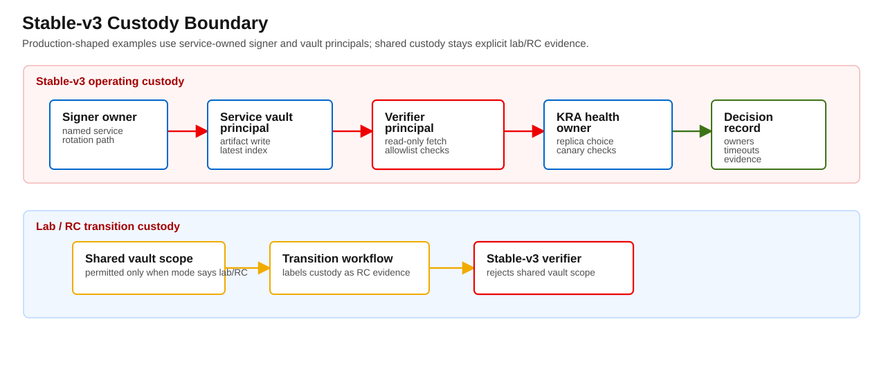
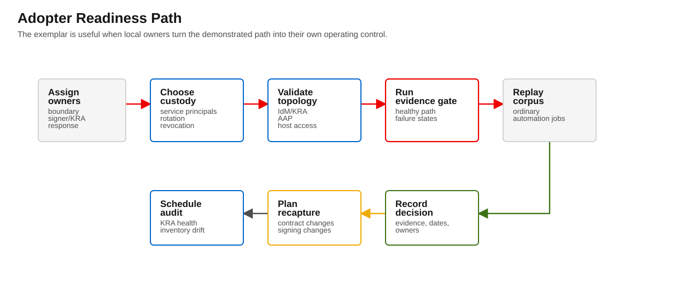

v3 packet
Blastwall v3 Operational Guidance
This guidance defines the operating boundary for stable-v3 claims. Stable-v3 is a signed evidence gate for a defined RHEL, IdM, AAP, KRA, and optional OpenShift/SPO reference topology. It is a reference exemplar for signed


Purpose
This guidance defines the operating boundary for stable-v3 claims. Stable-v3 is a signed evidence gate for a defined RHEL, IdM, AAP, KRA, and optional OpenShift/SPO reference topology. It is a reference exemplar for signed evidence gate operation. Adopters should collect local fleet-scale and portability evidence before expanding the claim beyond the Calabi reference topology.
Use this document with:
docs/blastwall-v3/stable-v3-readiness-checklist.mddocs/blastwall-v3/operator-runbook.mddocs/blastwall-v3/kra-topology-runbook.mddocs/blastwall-v3/revocation-and-breakglass.mddocs/blastwall-v3/evidence-index.mddocs/blastwall-v3/failure-state-manifest.yml
Service-Owned Signer And Vault Custody
Stable-v3 must use service-owned or named-user custody for signer and vault operations. Shared vault scope is lab/RC custody and is rejected for stable-v3 because it blurs the ownership boundary reviewers need to audit.
Stable operation requires:
- a named signer owner;
- a named KRA/vault owner;
- a configured vault primary and explicit server list;
- a vault scope that is not
shared; - signer allowlist ownership and review;
- a documented rotation and revocation path.
Transition or RC workflows may still use shared vault custody when they label it as lab/RC evidence and do not present the result as stable-v3 custody evidence.
Signer Separation And Lifecycle
The signer key and AAP workflow may be colocated in RC evidence, but that is not defense in depth against full AAP compromise. For production-like posture, prefer a dedicated signer principal, a dedicated signer certificate profile, and a signer credential that ordinary policy deployment or marker-writing jobs cannot read.
Required lifecycle expectations:
- signer owner accepts primary and backup responsibility;
- signer certificate issuance profile is documented;
- signer allowlist changes are reviewed;
- signer rotation is rehearsed before publication;
- revoked signer material fails closed in verifier tests;
- AAP preflight and marker promotion do not receive signer private-key access.
Breakglass Audit Expectations
Breakglass is an infrastructure-visibility exception only. It cannot bypass signature, signer allowlist, replay, drift, integrity, profile, host binding, revocation, expiry, or host-security failures.
Every breakglass run must include:
- explicit host scope;
- explicit profile scope matching the requested profile set;
- ticket;
- approver;
- reason;
- timeout;
- post-use review and normal-mode recovery evidence.
If either host verification failure or attestation security failure is present, do not use breakglass.
Destructive Re-Capture Triggers
Re-capture destructive evidence when a change touches any verifier/preflight behavior that operators rely on during a failure.
Required re-capture triggers:
- verifier or preflight failure-state classification changes;
- marker grammar or marker signing/index semantics change;
- AAP workflow wiring changes how artifacts are built, stored, retrieved, or verified;
- KRA vault custody path or replica-selection behavior changes;
- failure-state contract in
docs/blastwall-v3/failure-state-manifest.ymlchanges.
Destructive re-capture is not required for prose-only clarification, provided the documented failure-state contract and AAP wiring remain unchanged.
Calabi Evidence Boundary
Calabi evidence proves the current reference path. It does not prove broad portability across arbitrary IdM, KRA, AAP, RHEL, OpenShift, or SPO generations.
When using Calabi evidence:
- call it reference-topology evidence;
- keep shared-vault Calabi custody labelled as lab/RC custody;
- treat fleet-scale evidence as future validation unless separately captured;
- preserve job IDs, artifact hashes, branch commits, and restore proofs;
- separate observed runtime behavior from future portability goals.
Ordinary Automation Corpus Replay
The stable-v3 gate does not replace ordinary automation compatibility testing. Before expanding a claim, replay ordinary automation against the managed-host profile set and confirm expected service, package, user, group, systemd, SSH, and IdM workflows still pass.
If ordinary automation replay expands required SELinux allowances, treat that as a separate policy-scope change and rerun the relevant evidence packet.
SPO, KRA, And Fleet-Scale Evidence Boundaries
Current OpenShift/SPO evidence covers the validated path. Broader OpenShift generation coverage or cluster-independent runtime attestation should be backed by separate evidence before adoption teams expand the claim.
Current KRA evidence proves explicit primary-path behavior in the reference topology. Multi-replica failover or replication-lag claims should be backed by a separate packet.
Fleet-scale evidence remains future validation until broader mixed-state scale evidence is captured and reviewed.
Reference Topology Positioning
The stable-v3 claim should be stated narrowly:
Blastwall v3 is a signed evidence gate for a defined RHEL/IdM/AAP/KRA reference topology, validated in Calabi. Stable-v3 service-owned custody health is live-green in the Calabi demonstration environment.
Before expanding beyond that reference topology, collect the local fleet-scale, portability, custody, and review evidence needed for the intended operating environment.